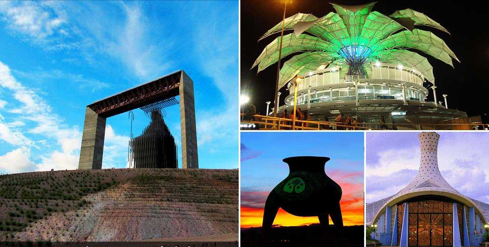

Lara, Coranón artesanal de Venezuela
Interior del Palacio de Gobierno de Lara, una muestra que recoge lo genuino, tradicional y curiosa de las piezas hechas a mano por los artesanos de los 9 municipios que conforman el Estado Lara; desde el Caimito hasta las Tinajitas, ubicados en el corazón de los Municipios Iribarren y Crespo, armonía e ingenio de una tierra de creadores se fusionan en piezas que llenan de esperanza los hogares de toda Venezuela, donde los colores crepusculares son la referencia más próxima.
Bendecidos por la naturaleza, en Lara se encuentran los más elaborados trabajos en arcilla, gres, fibra vegetal, vidrio, cuero, piedra, madera, hilo y otros elementos que consagran a la entidad larense como un Estado referencial por su vocación artesanal en nuestro país y el resto del mundo; como prueba de ello, talas en madera del caserío Guadalupe y tejidos del poblado de Tintorero, en el Municipio Jiménez, se venden en el exterior donde el sello venezolano es sinónimo de calidad.